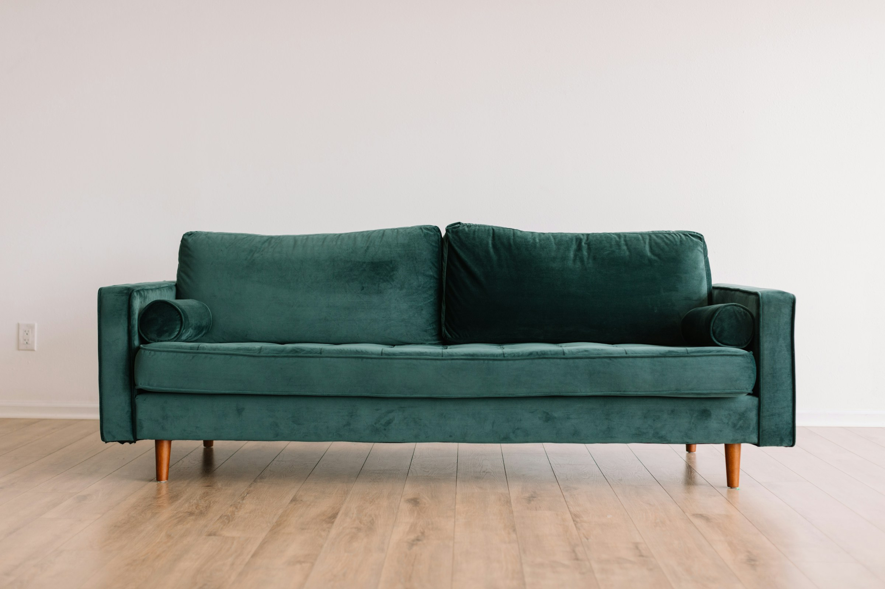
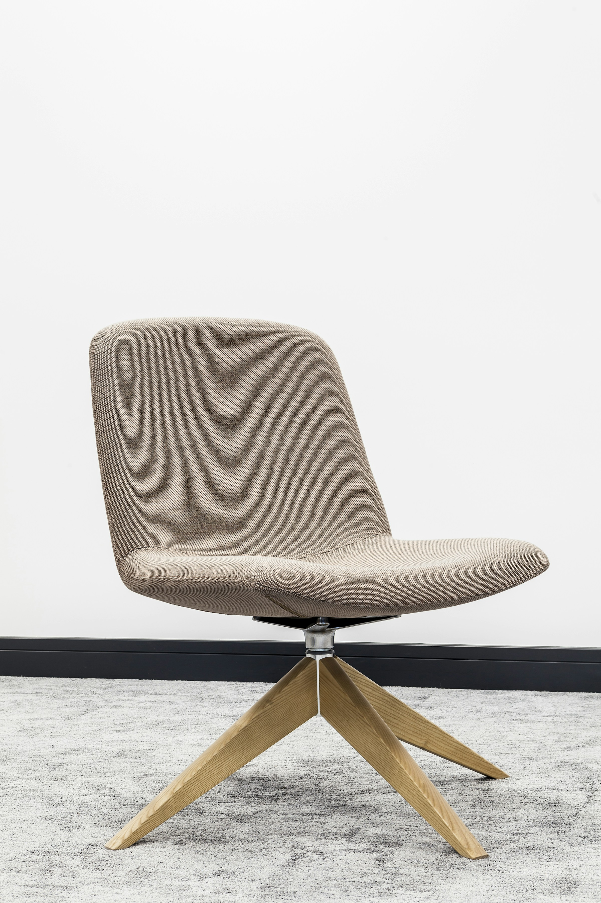
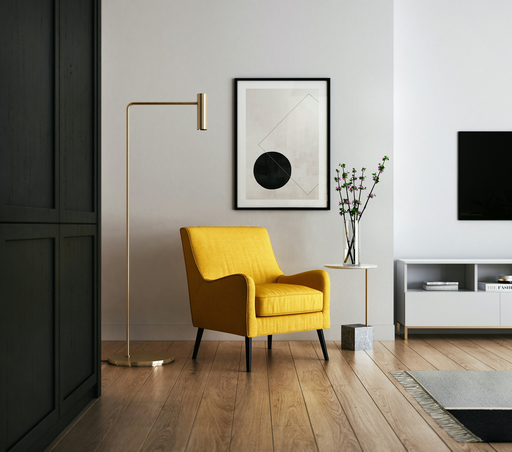

Serie A — Sofá terciopelo esmeralda
Foto base real del producto. Las escenas de campaña se generan con img2img + ControlNet + IP-Adapter preservando color, nap del terciopelo, piping y silueta.

Serie B — Sillón tejido taupe
Segunda pieza con trama de tela visible (anti-smear). Mismo enfoque: producto real como base, ambientes distintos sin alterar forma ni costura.

Referencia de tejido

Método
Workflow orientado a fidelidad de producto, no a inventar el mueble desde cero.
- Partir de foto real del producto (img2img / inpainting).
- Fijar silueta y estructura con ControlNet (depth / canny).
- Preservar identidad visual con IP-Adapter (color, tela, forma).
- Separar producto vs. ambiente con Regional Prompter; PAG + Hi-Res para detalle de trama.
- Descartar o retocar lo que la IA deforma (patas, costuras, smearing).
Contacto
Disponible para trabajo freelance / por proyecto. Mendoza, Argentina.
Trabajo con Stable Diffusion, ControlNet, IP-Adapter, Regional Prompter, PAG y Hi-Res. Experiencia previa generando assets con SD. Foco: integrar el producto real en campañas de ambiente sin alterar tela, forma ni terminaciones.